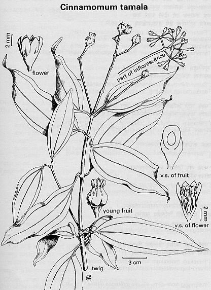

|
ECONOMICALLY
IMPORTANT PLANTS OF INDIA |
| Under-utilized Food and Fodder species and their wild relatives | Contributed by Ms.M.L Annapurna And Dr. Dhanapal, UAS, Bangalore |
Cinamomum tamala (F. Hamilt.) Nees & Ebern.
Taxonomic Details

----- Correct Name
----- Classification
----- Synonyms
----- Common Names
Other Biological Details
----- Habit and Habitat
----- Diagnostic Features
----- Reproductive Biology
---------- Breeding System
---------- Phenology
---------- Pollinators
---------- Seed Biology
----------Seed Germination
------ Cultivation
----- Major Pests and Diseases
Economic Potential and Uses
----- Parts Used
----- Uses
----- Harvesting Practices
----- Produce and Products
----- Chemistry
----- Processing Techniques
----- Other uses
----- Economic Potential to the
Country
----- Export Potential
Miscellaneous Information
Literature
HABIT & HABITAT:
A medium-sized evergreen tree, 7.5 m in height and 1.35 m in girth,
distributed in tropical and subtropical Himalayas at altitudes of 1,000-2,400
m, Khasi and Jaintia hills in Meghalaya at altitudes of 1,000-1800 m in Sikkim,
Assam and Mizoram and found cultivated in Tripura.
Availability :
Tropical and Subtropical Himalaya at 3,000-7,800ft altitute, Sylhet and Khasia
hills at 3,000-4,000 ft.
Status :
DIAGNOSTIC FEATURES
Bark dark brown; leaves oppoaite or some times alternate, elliptic
to oblong-lanceolate, glabrous, 3-nerved at base, pink when young; flowers pale
yellow, pubescent in panicles; fruits black, ovoid on the thickened peduncle
and enlarged base of the perianth.
Pollinators:
Seed Biology :
Seed Germination:
Cultivation:
Propagation: The plant are raised from seeds sown in nursery beds in March-April.
Seedlings appear 30-45 days after sowing and are transplanted when 4-5 years
old in the field at a spacing of 3m x 2m. Sufficient shade is provided in the
early stages of growth and shade trees are cleared after 8-9 years. The fields
are not usually manured; under growthis occasionally removed.
MAJOR PESTS & DISEASES
Informatin on diseases and pests of C. tamala is scanty.
However,
Pests:
Diseases: Exobasidium cinnamomum casues leaf spot. Pestalotia
cinnamomi Petch and Cercospora sp. cause shot holes and leaf spot
diseaseson the plants grown in shaded and crowded sitiuations.
Parts used
Leaves, Bark,
Harvesting
Practices
The leaves are ready for harvesting when the trees are 10 years old,
and they continue to bear for a century. The leaves are collectedevery year
from young vigorous plants and in alternate years from old and week ones. Collections
are made in dry weather from Oct.-Dec. till March.
Yield: A tree yields 10-20 kg of dry leaves per year. About 8-10 tonnes of leaves
are annually collected from Joginder Nagar and Mandi areas of Himachal Pradesh
in India.
Produce and Products
Oil
Cinnamomum tamala Fr., 2000, Kirtikar & Basu's Illustrated Indian Medicinal Plants: Their Usage in Ayurveda & Unani Medicine, Vol. 9, pp.2959-2961.